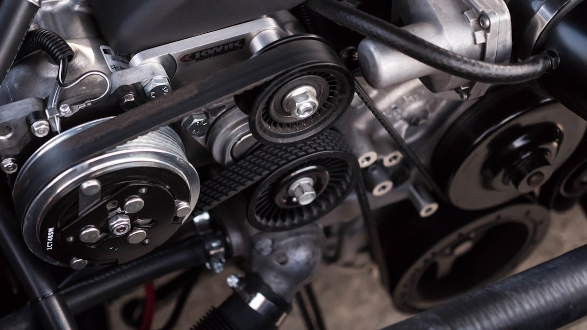

Inspektion & Wartung
Wartung streng nach Herstellervorgaben mit Dokumentation im Serviceheft – Garantie und Kulanz bleiben erhalten.
Mehr erfahren →Bosch Car Service · Bad Schwartau
Markenübergreifende Meisterwerkstatt und geprüfte Gebrauchtwagen – inhabergeführt an der Lübecker Straße 77. Wartung nach Herstellervorgaben, Original-Teile und ehrliche Beratung. Termin anfragen, den Rest übernehmen wir.
Weiterscrollen · das Fahrzeug dreht sich
Vom Ölwechsel bis zur Unfallinstandsetzung: Meisterqualität mit Original-Teilen und Wartung nach Herstellervorgaben – Ihre Garantie bleibt erhalten.
Wartung streng nach Herstellervorgaben mit Dokumentation im Serviceheft – Garantie und Kulanz bleiben erhalten.
Mehr erfahren →Hauptuntersuchung und Abgasuntersuchung bequem über uns organisiert – inklusive Vorab-Check, damit es keine Überraschungen gibt.
Mehr erfahren →Räderwechsel, Einlagerung und Achsvermessung sowie Klimaanlagen-Check und -Desinfektion für jede Jahreszeit.
Mehr erfahren →Karosserie- und Lackarbeiten nach Unfallschaden inklusive Gutachten-Koordination und Abwicklung mit der Versicherung.
Mehr erfahren →Moderne Bosch-Diagnosetechnik findet Fehler schnell und zuverlässig – von der Motorelektronik bis zum Assistenzsystem.
Mehr erfahren →Geprüfte Gebrauchtwagen mit Werkstatt-Historie – und faire Ankaufsangebote für Ihr bisheriges Fahrzeug.
Zum Bestand →Als Bosch Car Service Partner verbinden wir die Diagnosetechnik und Qualitätsstandards eines Weltkonzerns mit der Nähe eines inhabergeführten Familienbetriebs.

Auf Bewertungsportalen wie golocal, mobile.de und AutoScout24 wird das Autohaus Bad Schwartau wiederkehrend für dieselben Stärken gelobt:
Kompetent und freundlich – mit Empfehlungen, die sich am Fahrzeug orientieren, nicht am Umsatz.
Ob Werkstattauftrag oder Gebrauchtwagen: sorgfältige, nachvollziehbare Übergabe ohne offene Fragen.
Professionell und vertrauenswürdig – die Erfahrung der Inhaber merkt man jedem Auftrag an.
[PLATZHALTER: 2–3 freigegebene Original-Kundenzitate mit Name/Quelle einfügen – z. B. aus dem Google-Unternehmensprofil]
| Montag – Freitag | 7:45 – 17:00 Uhr |
| Fahrzeugannahme & -abgabe | bis 18:00 Uhr |
| Samstag | 9:00 – 13:00 Uhr |
| Sonntag | geschlossen |
[PLATZHALTER: Öffnungszeiten final bestätigen – Angaben laut Branchenverzeichnissen]
Autohaus Bad Schwartau GmbH & Co. KG
Lübecker Str. 77 · 23611 Bad Schwartau
0451 / 98 90 15-0 · info@autohaus-bad-schwartau.de